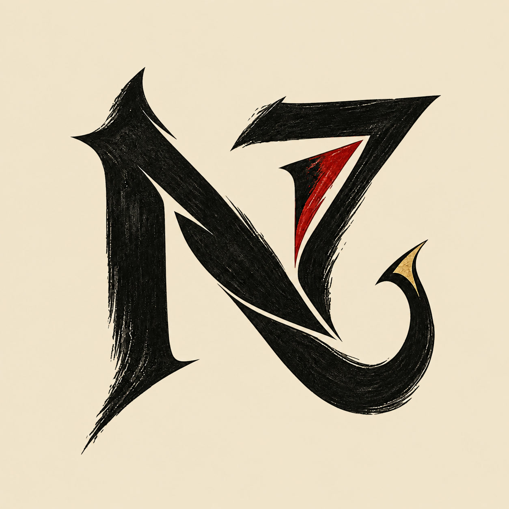

Ink. Instinct.
Curiosity.
A face-free N7 emblem for Aditya Gholap: a sharp black ink monogram, a crimson cut, and a small gold flourish. Diablo / Noir's atmosphere translated into an abstract personal mark.
URBAN DOODLE × COMIC INK × FRASURBANE

96 / 64 / 32 PX